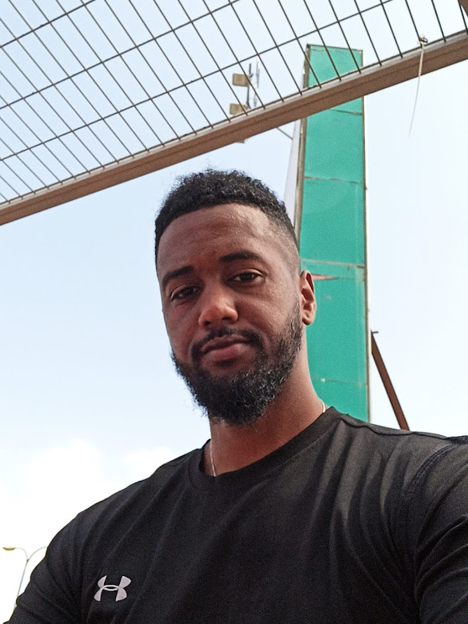
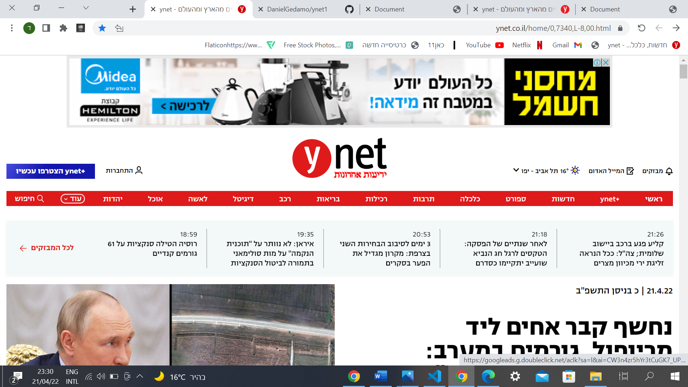
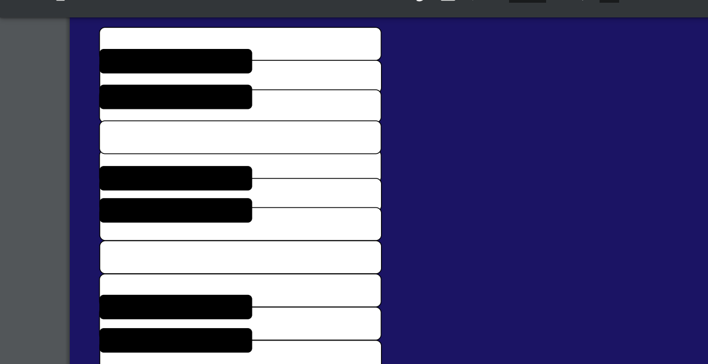
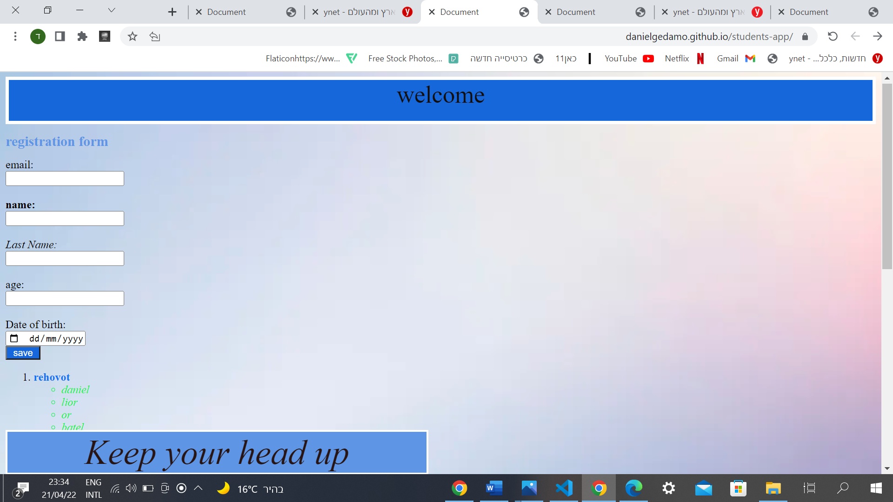

Daniel Gedamo 
full stack developer
Work Experience
2021-2022 Integrator Elbit Elaop Rehovot
• Use and work in a laser environment
• Taking part in secret projects for several parties around the
world
• Accurate assemblies at a variety of levels
• Working with optics in several configurations
• Work in front of accurate drawings
2017-2022 Security Team Shift Officer Security facility
• As part of the role, abilities were acquired and expressed:
• Managing a team of about 20 employees
• Responsibility for the absorption, mentoring and training of new
employees.
• Resisting stressful situations and making decisions.
• Serves as an advisor and authority to colleagues and subordinates,
understanding and organizational conduct, security
responsibility for a facility on behalf of the Ministry of Defense.
Education
•2019 - 2021 Practical Engineer with a specialization in Mechatronics,
ORT Rehovot College.
•2010-2013 Full matriculation, De Shalit High School, Rehovot
Army
2014 - 2017 - Warrior | Kfir Brigade.
• Certificate of Excellence for thwarting an attack
• Multiple conduct in front of a mixed population
of Arabs and
Jews, which requires composure and sharpness
volunteering
Assistance to Program Manager The platform , Rehovot
• Providing support for network marketing
• Coordination of meetings and tutorials
• Monitoring and directing program participants
Some of my projects:
YNET -In
this project I was given a task to practice and find new and creative
ways
to create a website identical to YNET. I used pictures,
titles, tables, lists and more.

responsibilityIn this project I practiced using flex grid filters and other interesting design features. This project was especially interesting and fun for me

table practice
This was one of my first projects where I learned to use tables
